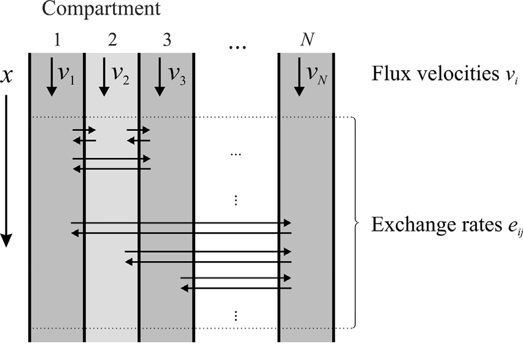
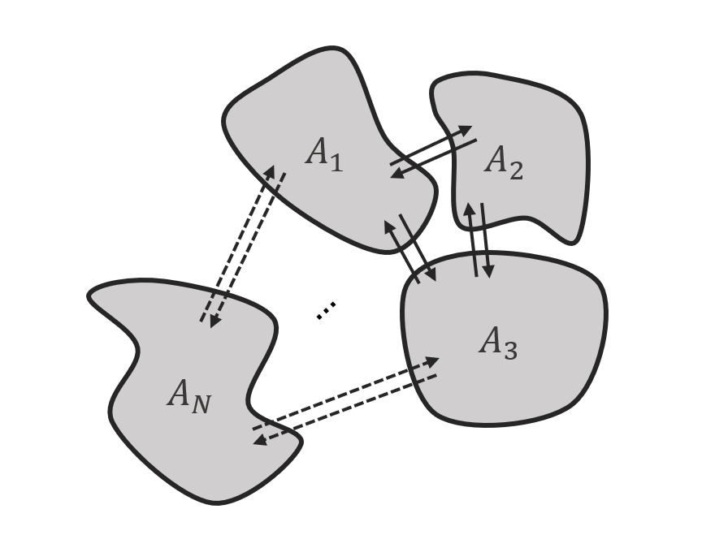

Multichannel Transport model (MCT model)#
The Multichannel Transport (MCT) model in CADET is based on a class of compartment models introduced by Jonas Bühler et al. [9], which was originally developed in the field of plant sciences. There it is used to determine transport and storage parameters of radioactive labelled tracer molecules from positron emission tomography (PET) or magnetic resonance imaging (MRI) based experimental data. The model represents main functions of vascular transport pathways: axial transport of the tracer, diffusion in axial direction, lateral exchange between compartments and storage of tracer in compartments. Here, the axial direction represents the length of the stem of the plant and the lateral dimension its cross section. In the MCT context, the compartments of the model class are also referred to as channels.
The same model equations arise in describing other biological and technical processes outside of the field of plant sciences, where solutes are transported and exchanged between spatially separated compartments, for example liquid-liquid chromatography (LLC). Here, components in a mixture are separated based on their interactions with two immiscible phases of a biphasic solvent system [10]. The MCT model represents these phases by channels with respective transport and exchange properties. While the current implementation only covers linear driving forces for the exchange processes, the reaction module in CADET allows to add non-linear driving forces for the exchange processes and other chemical reactions in the channels.
The MCT model equations are given for all channels \(l \in \{1, \dots, N_k\}\) and components \(i \in \{1, \dots, N_c\}\) by
where \(e^i_{lk}\) denotes the exchange rate of component \(i\) from channel \(l\) to channel \(k\), and \(A_l\) denotes the cross section area of channel \(l\). The equations are complemented by Danckwerts boundary conditions [8]
The MCT model describes \(N_k\) one-dimensional spatially parallel channels (see Fig. 6). In each channel \(l\), molecules of different species \(i\), represented by a liquid phase concentration \(c^\ell_{i,l}\), can be transported with flux velocities \(v_{i,l}\) while undergoing axial diffusion: \(D_{\text{ax},i,l}\). Molecules can be laterally exchanged between any pair of channels \(l\) and \(k\) with rate constant \(e^i_{lk}\). We note that the exchange fluxes are computed from the exchange rates w.r.t. the source channel volume, that is, channels with the same exchange rate but different volume will produce differently large exchange fluxes. For further elaboration on this, please refer to the second use-case section below. If reactions are considered, the term \(f_{\text{react},i,l}\left(c^\ell_l\right)\) represents the net change of concentration \(c^\ell_{il}\) due to reactions in channel \(l\) involving component \(i\).
For information on model parameters see Multichannel Transport model (MCT model).

Fig. 6 Illustration of the Multichannel Transport model class and relevant parameters. Figure taken from Jonas Bühler et al. [9].#
The cross-section area \(A_N\) is individually specified for each channel (see Fig. 7). The MCT is agnostic to the shape of these cross sections, while their ratio determines the distribution of the volumetric flow.

Fig. 7 Scheme of exemplary channels with different cross section areas and arbitrary exchange between channels.#
Use-case: Tracer transport in plants#
The MCT can be used to model tracer transport in plants, following Jonas Bühler et al. [9]. There, the model class is defined by a system of partial differential equations:
\(\boldsymbol{\rho}=({\rho}_1 \dots {\rho}_N)^T\) is the tracer density within each channel \(N\) at position \(x\) and time \(t\).
The coupling matrix \(A\) contains exchange rates \(e_{lk}\) describing the lateral tracer transport from channel \(l\) to channel \(k\). All diagonal elements \(e_{ll}\) in the first term are zero indicating there is no tracer exchange of one channel with itself. The second term ensures mass conservation and removes exchanged tracer from each channel respectively, by subtracting the sum of all exchange rates of a row (and therefore channel) from the diagonal. The third term describes the decay of a radioactive tracer at a tracer specific rate \(\lambda\).
The diagonal matrix \(V\) contains the flux velocities \(v_{l}\) for each channel.
The diagolal matrix \(D\) contains the dispersion coefficients \(d_{l}\) for each channel.
All parameters can be zero to exclude the respective mechanism from the model. A chart of all resulting valid models of the model family can be found in Bühler et al. [9].
Use-case: Lumped Rate Model without pores and linear kinetic binding#
The MCT can be used to model a LRM with linear binding, if specific parameters are chosen. To demonstrate this, we derive the LRM with linear binding equations from the MCT defined above.
We consider the MCT with two channels, which are used to represent the liquid and solid phase of the LRM, and only take one component into account, for the sake of brevity. The channel volumes \(V_1, V_2 > 0\) and cross section areas \(A_1,A_2>0\) are chosen according to the total column porosity (here \(\varepsilon_t \in (0,1)\) of the LRM, i.e. e.g. \(A_1 = \varepsilon_t A\), with \(A\) being the LRM column cross section area. We set the transport parameters of the second channel to zero, change notation for the concentrations, \(c_{0,1}^\ell, c_{0,2}^\ell \rightarrow c^\ell, c^s\), and get
To model the linear binding, we define the exchange rates according to the adsorption and desorption rates and adjust for the channel volumes: Since the binding fluxes are computed from the binding rates w.r.t bead surface area (i.e. solid volume), we need to adjust the exchange rate from the first to the second channel accordingly; remember that exchange fluxes are computed based on exchange rates w.r.t channel (in this case liquid) volume. That is, we define \(e_{12}^0 = k_a A_2 / A_1 = k_a \frac{1-\varepsilon_t}{\varepsilon_t}\) and \(e_{12}^0 = k_d\) and get
Adding \(\frac{1-\varepsilon_t}{\varepsilon_t}\) times the second channel equation to the first channel equation, we get the standard formulation of the Lumped rate model without pores (LRM) with (kinetic) linear binding:
For information on model parameters see Multichannel Transport model (MCT model).